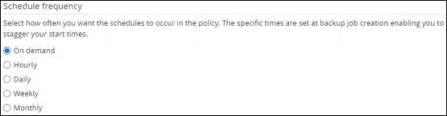

개념
개념
SAP HANA 데이터베이스에 대한 백업 정책을 생성합니다
 변경 제안
변경 제안
SnapCenter를 사용하여 SAP HANA 데이터베이스 리소스를 백업하기 전에 백업할 리소스 또는 리소스 그룹에 대한 백업 정책을 만들어야 합니다. 백업 정책은 백업을 관리, 예약 및 유지하는 방법을 제어하는 규칙의 집합입니다.
-
백업 전략을 정의해야 합니다.
자세한 내용은 SAP HANA 데이터베이스의 데이터 보호 전략 정의에 대한 정보를 참조하십시오.
-
SnapCenter 설치, 호스트 추가, 스토리지 시스템 접속 설정, 리소스 추가 등의 작업을 완료하여 데이터 보호를 위한 준비가 되어 있어야 합니다.
-
스냅샷 복사본을 미러 또는 볼트로 복제할 경우 SnapCenter 관리자가 소스 및 타겟 볼륨에 대한 SVM을 모두 할당해야 합니다.
또한 정책에서 복제, 스크립트 및 애플리케이션 설정을 지정할 수 있습니다. 이러한 옵션을 사용하면 다른 리소스 그룹에 대해 정책을 다시 사용할 때 시간을 절약할 수 있습니다.
-
SAP HANA 시스템 복제
-
운영 SAP HANA 시스템을 보호할 수 있으며 모든 데이터 보호 작업을 수행할 수 있습니다.
-
2차 SAP HANA 시스템을 보호할 수 있지만 백업을 생성할 수는 없습니다.
페일오버 후에는 보조 SAP HANA 시스템이 기본 SAP HANA 시스템으로 전환되므로 모든 데이터 보호 작업을 수행할 수 있습니다.
SAP HANA 데이터 볼륨에 대한 백업을 생성할 수는 없지만 SnapCenter은 NDV(Non-Data Volumes)를 계속 보호합니다.
-
-
SnapLock
-
'특정 기간 동안 백업 복사본 유지' 옵션을 선택한 경우 SnapLock 보존 기간은 언급된 보존 일수보다 작거나 같아야 합니다.
-
스냅샷 복사본 잠금 기간을 지정하면 보존 기간이 만료될 때까지 스냅샷 복사본이 삭제되지 않습니다. 이로 인해 정책에 지정된 개수보다 많은 수의 스냅샷 복사본을 보존할 수 있습니다.
-
ONTAP 9.12.1 이하 버전의 경우, 복원 중에 SnapLock 볼트 스냅샷 복사본에서 생성된 클론은 SnapLock 볼트 만료 시간을 상속합니다. 스토리지 관리자는 SnapLock 만료 시간 이후 클론을 수동으로 정리해야 합니다.
-

|
기본 SnapLock 설정은 SnapCenter 백업 정책에서 관리하고 보조 SnapLock 설정은 ONTAP에서 관리합니다. |
-
왼쪽 탐색 창에서 * 설정 * 을 클릭합니다.
-
설정 페이지에서 * 정책 * 을 클릭합니다.
-
새로 만들기 * 를 클릭합니다.
-
이름 페이지에 정책 이름과 설명을 입력합니다.
-
설정 페이지에서 다음 단계를 수행하십시오.
-
백업 유형 선택:
원하는 작업 수행할 작업… 데이터베이스의 무결성 검사를 수행합니다
파일 기반 백업 * 을 선택합니다. 활성 테넌트만 백업됩니다.
스냅샷 복사본 기술을 사용하여 백업을 생성합니다
스냅샷 기반 * 을 선택합니다.
-
On demand *, * Hourly *, * Daily *, * Weekly * 또는 * Monthly * 를 선택하여 일정 유형을 지정합니다.
리소스 그룹을 생성하는 동안 백업 작업의 스케줄(시작 날짜, 종료 날짜 및 빈도)을 지정할 수 있습니다. 따라서 동일한 정책 및 백업 빈도를 공유하는 리소스 그룹을 생성할 수 있을 뿐 아니라 각 정책에 서로 다른 백업 스케줄을 할당할 수도 있습니다. 
오전 2시에 예약된 경우 DST(일광 절약 시간) 중에는 일정이 트리거되지 않습니다. -
사용자 지정 백업 설정 * 섹션에서 플러그인에 전달할 특정 백업 설정을 키 값 형식으로 제공합니다.
플러그인으로 전달할 여러 키 값을 제공할 수 있습니다.
-
-
보존 페이지에서 백업 유형에 대한 보존 설정과 백업 유형 페이지에서 선택한 스케줄 유형을 지정합니다.
원하는 작업 그러면… 일정 수의 스냅샷 복사본을 유지합니다
유지할 총 스냅샷 복사본 * 을 선택하고 유지할 스냅샷 복사본 수를 지정합니다.
스냅샷 복사본 수가 지정된 수를 초과하면 가장 오래된 복사본이 먼저 삭제된 후 스냅샷 복사본이 삭제됩니다.
최대 보존 값은 ONTAP 9.4 이상의 리소스에 대해 1018이고, ONTAP 9.3 이전 버전의 리소스에 대해서는 254입니다. 보존이 기본 ONTAP 버전에서 지원하는 값보다 높은 값으로 설정된 경우 백업이 실패합니다. 
스냅샷 복사본 기반 백업의 경우 SnapVault 복제를 사용하도록 설정하려는 경우 보존 수를 2 이상으로 설정해야 합니다. 보존 횟수를 1로 설정하면 새 스냅샷 복사본이 타겟으로 복제될 때까지 첫 번째 스냅샷 복사본이 SnapVault 관계의 참조 스냅샷 복사본이므로 보존 작업이 실패할 수 있습니다.
SAP HANA 시스템 복제의 경우 SAP HANA 시스템의 모든 리소스를 하나의 리소스 그룹에 추가하는 것이 좋습니다. 이렇게 하면 올바른 수의 백업이 유지됩니다.
SAP HANA 시스템 복제의 경우, 생성된 총 스냅샷 복사본은 리소스 그룹에 대한 보존 세트와 같습니다. 가장 오래된 스냅샷 복사본을 제거할 때는 가장 오래된 스냅샷 복사본이 있는 노드를 기반으로 합니다. 예를 들어, SAP HANA 시스템 복제 운영 및 SAP HANA 시스템 복제 보조 서버가 있는 리소스 그룹의 경우 보존 기간이 7로 설정됩니다. SAP HANA 시스템 복제 운영 및 SAP HANA 시스템 복제 2차 복제를 포함하여 한 번에 최대 7개의 스냅샷 복사본을 생성할 수 있습니다. Snapshot 복사본을 일정 일 동안 유지합니다
스냅샷 복사본 보관 * 을 선택한 다음, 스냅샷 복사본을 삭제하기 전에 유지할 일 수를 지정합니다.
스냅샷 복사본 잠금 기간
스냅샷 복사본 잠금 기간을 선택하고 일, 개월 또는 연도를 선택합니다.
SnapLock 보존 기간은 100년 미만이어야 합니다.
-
스냅샷 복사본 기반 백업의 경우 복제 페이지에서 복제 설정을 지정합니다.
이 필드의 내용… 수행할 작업… -
로컬 스냅샷 복사본을 생성한 후 SnapMirror 업데이트 * 를 참조하십시오
다른 볼륨에 백업 세트의 미러 복사본을 생성하려면 이 필드를 선택합니다(SnapMirror 복제).
ONTAP의 보호 관계가 미러와 볼트 유형이고 이 옵션만 선택한 경우, 운영 스토리지에 생성된 스냅샷 복사본이 대상으로 전송되지 않고 대상에 나열됩니다. 복원 작업을 수행하기 위해 대상에서 이 스냅샷 복사본을 선택하면 선택한 볼트된/미러된 백업 오류 메시지에 대해 보조 위치를 사용할 수 없습니다. 라는 메시지가 표시됩니다.
보조 복제 중에 SnapLock 만료 시간에 운영 SnapLock 만료 시간이 로드됩니다.
토폴로지 페이지에서 * 새로 고침 * 버튼을 클릭하면 ONTAP에서 검색된 2차 및 1차 SnapLock 만료 시간이 새로 고쳐집니다.
을 참조하십시오 "토폴로지 페이지에서 SAP HANA 데이터베이스 백업 및 클론 보기".
-
로컬 스냅샷 복사본을 생성한 후 SnapVault 업데이트 * 를 클릭합니다
디스크 간 백업 복제(SnapVault 백업)를 수행하려면 이 옵션을 선택합니다.
보조 복제 중에 SnapLock 만료 시간에 운영 SnapLock 만료 시간이 로드됩니다. 토폴로지 페이지에서 * 새로 고침 * 버튼을 클릭하면 ONTAP에서 검색된 2차 및 1차 SnapLock 만료 시간이 새로 고쳐집니다.
SnapLock가 SnapLock 볼트라고 하는 ONTAP의 보조 버전에서만 구성된 경우 토폴로지 페이지에서 * 새로 고침 * 버튼을 클릭하면 ONTAP에서 검색된 보조 시스템의 잠금 기간이 새로 고쳐집니다.
SnapLock 볼트에 대한 자세한 내용은 을 참조하십시오 "볼트 대상에서 WORM에 스냅샷 복사본을 커밋합니다"
을 참조하십시오 "토폴로지 페이지에서 SAP HANA 데이터베이스 백업 및 클론 보기".
-
보조 정책 레이블 *
스냅샷 레이블을 선택합니다.
선택한 스냅샷 복사본 레이블에 따라 ONTAP에서는 해당 레이블과 일치하는 2차 스냅샷 복사본 보존 정책을 적용합니다.
로컬 스냅샷 복사본 * 을 생성한 후 SnapMirror 업데이트 * 를 선택한 경우, 선택적으로 보조 정책 레이블을 지정할 수 있습니다. 그러나 로컬 스냅샷 복사본 * 을 생성한 후 * SnapVault 업데이트 * 를 선택한 경우에는 보조 정책 레이블을 지정해야 합니다. -
오류 재시도 횟수 *
작업이 중지되기 전에 허용되는 최대 복제 시도 횟수를 입력합니다.
보조 스토리지에 대한 ONTAP의 SnapMirror 보존 정책을 구성하면 보조 스토리지에서 스냅샷 복사본의 최대 제한에 도달하지 않도록 해야 합니다. -
-
요약을 검토하고 * Finish * 를 클릭합니다.